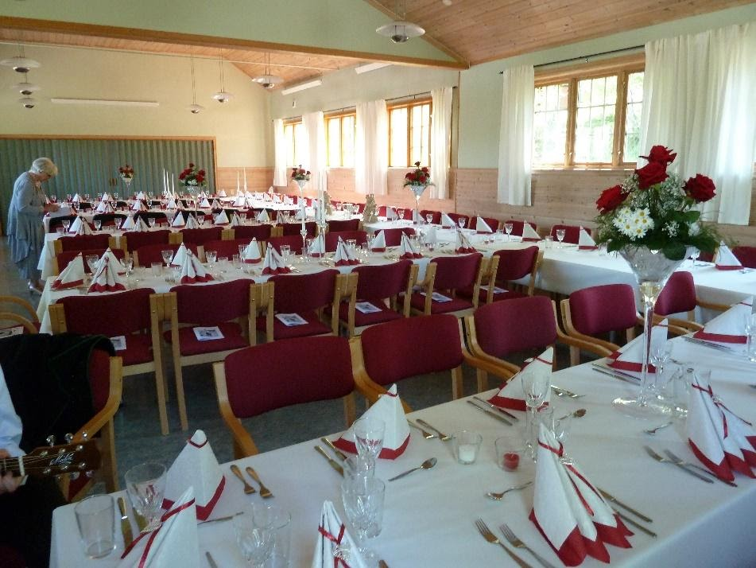

Ask menighetshus er blitt rehabilitert flere ganger, og resultatet er blitt et trivelig og tjenlig hus. Kjøkkenet ble nytt i 2014 og må sies å være et «storkjøkken» i passelig format for ca. 100 gjester som salen rommer. Men rundt 60 gjerster er optimalt. Se bildene under. Huset har alt av nødvendig dekketøy. Duker kan leies.
Vi har et godt høytaleranlegg og ypperlig projektor. Tar en med seg en bærbar pc, så er det adaptere for enkel påkobling. Toalettfasilitetene er nye, også for funksjonshemmede. Huset blir mye brukt til minnesamvær, dåps- og konfirmasjons-middager. Bryllup har det vært flere ganger. Også runde dager feires i huset. Vi understreker at det ikke er tillatt med alkoholservering.
Ta gjerne kontakt for omvisning, pris og bestilling:
Øyvind Fluge, 98817422
Vi ber deg også sette deg inn i ordensreglene for Ask Menighetshus før evt. utlån

Prisene pr. januar 2021:
Utleiepris er 2.500,- vel og merke hvis en mopper selv etter arrangementet
Vask koster 500,- og kommer i tillegg.
Leie av dukene er 75,- pr. stk.
Ordensregler for Ask menighetshus
A: Ask menighetshus er ikke i offentlig eie. Styret for huset må selv drifte og vedlikeholde eiendommen. Det er derfor viktig at alle brukerne behandler hus og innbo som om ”det var ens eget”. Meld fra om noe er blitt skadet mens du/dere leide huset.
B: Temperaturen blir regulert av huseier. Ved utleie settes temperaturen til 20 grader. Etter bruk settes temperaturen ned til 18 grader. Bruk kun mobil.app. for å regulere varmepumpen, ikke fjernkontrollen.
C: Nødvendig snørydding fra parkeringsplass og ned til inngang utføres av brukerne.
D: Det er ikke tillatt å røyke eller å servere alkohol i huset.
1. Leietaker skal orientere seg om rømningsveier og brannslukningsapparater
2. Merk hvordan rommene er ”møblert” før du gjør endringer for ditt bruk. Oppslag på vegg i småsalen.
3. Bordene skal ikke skyves på golvet, men bæres på plass
4. Stolene skal ikke skyves på golvet, men bæres på plass.
5. Ved bruk av oppvaskmaskin, skal bruksanvisning følges nøye. Henger på vegg i kjøkken.
6. Etter bruk skal alt settes på sin plass, se punktene 2, 3 og 4.
7. Golvene skal støvsuges hvis nødvendig. Det skal alltid moppes i alle rom etter bruk. Dørmattene ristes grundig. Støvsuger og mopper i skap på kjøkkenet. Huset tar ansvar for å få moppene vasket
8. Hvis en bruker duker som tilhører huset, koster dette kr 75,- pr. duk. (Gjelder fra 18.8.16)
9. Kjøkkenhåndklær, kluter og duker sørger huset for å bli vasket. Legg dette ved vasken.
10. Før en låser av, se etter at alle ytterdører og vinduer er lukket og låst. Alle innvendig dører i første etasje skal stå åpne, bortsett fra dør til kjøkken og dør til stollager. Lysene slukkes.
11. I månedene september - april, skal utelyset ved hoveddør alltid være slått på.
12. Betaling for leie av huset settes inn på: Ask menighetshus, konto 6515 11 33139, eller betales ved innlevering av nøklene. Pris: Kr 500,- . Eventuell vask: Kr 500,-